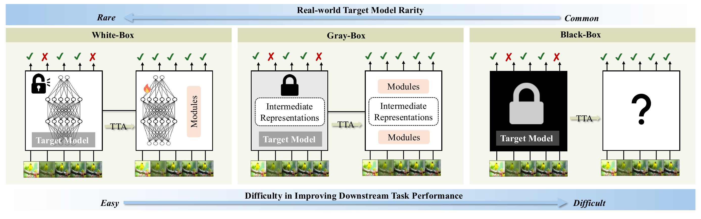
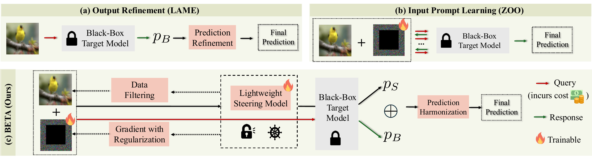
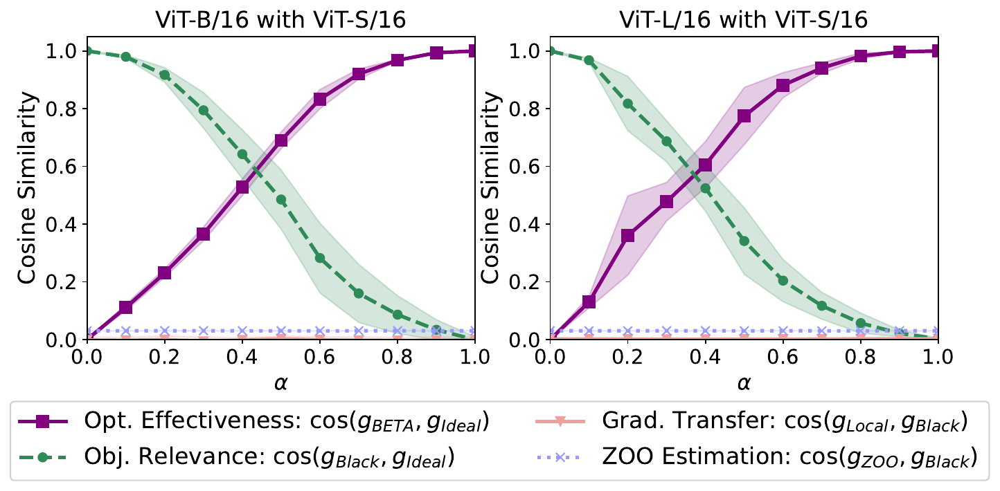
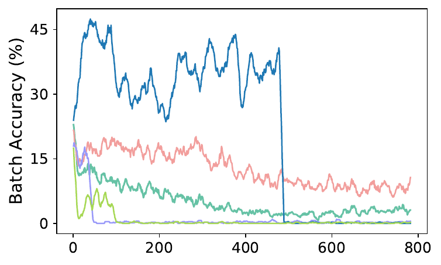
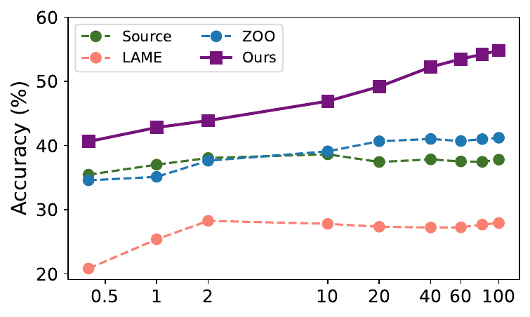

Abstract
Key Results at a Glance
(ViT-B/16, black-box)
(CLIP)
(Clarifai commercial API)
(vs. 16+ for ZOO)
The Strict Black-Box TTA Setting
Most state-of-the-art vision models are now deployed as opaque APIs. In this setting the client can only submit a raw image and receive a probability vector in return, with no access to parameters, gradients, or intermediate features. Prior TTA work relies on exactly those missing signals.

Table 1. Comparison of TTA methods across key capabilities. We evaluate each method's requirements for accessing model parameters, internal tokens, intermediate features, and gradients, alongside its visual encoder architectural flexibility, support for different model types (Vision models (VMs) / Vision-Language models (VLMs)), query efficiency (one API call per test sample), and inference latency. BETA is the only strict black-box method that keeps a single API call per sample and real-time latency.
| Access | Method | w/o Params. | w/o Tokens | w/o Feats. | w/o Grad. | Arch-Agnostic | VMs | VLMs | 1 API/Sample | Low Latency |
|---|---|---|---|---|---|---|---|---|---|---|
| White | TENT | ✗ | ✗ | ✗ | ✗ | ✓ | ✓ | ✓ | ✓ | ✓ |
| White | TPT | ✗ | ✗ | ✗ | ✗ | ✓ | ✗ | ✓ | ✓ | ✓ |
| Gray | T3A | ✗ | ✓ | ✗ | ✓ | ✓ | ✓ | ✓ | ✗ | ✓ |
| Gray | FOA | ✓ | ✗ | ✗ | ✓ | ViT-only | ✓ | ✓ | ✗ | ✗ |
| Gray | B2TPT | ✓ | ✗ | ✓ | ✓ | ViT-only | ✗ | ✓ | ✗ | ✗ |
| Gray | BCA | ✓ | ✓ | ✗ | ✗ | ✓ | ✓ | ✓ | ✓ | ✓ |
| Black | LAME | ✓ | ✓ | ✓ | ✓ | ✓ | ✓ | ✓ | ✓ | ✓ |
| Black | Augmentation | ✓ | ✓ | ✓ | ✓ | ✓ | ✓ | ✓ | ✗ | ✗ |
| Black | Purification | ✓ | ✓ | ✓ | ✓ | ✓ | ✓ | ✓ | ✗ | ✗ |
| Black | ZOO | ✓ | ✓ | ✓ | ✓ | ✓ | ✓ | ✓ | ✗ | ✗ |
| Black | BETA (Ours) | ✓ | ✓ | ✓ | ✓ | ✓ | ✓ | ✓ | ✓ | ✓ |
Method Overview

BETA operates with two models: a frozen black-box target $f_B$ (e.g., a commercial API) and a lightweight local steering model $f_S$ with full gradient access. We learn an additive visual prompt $\delta$ and optimize it through the steering model's local gradients.
Why naive gradient transfer fails
Gradients from a local surrogate do not transfer directly to a different black-box architecture. The per-example gradient cosine similarity between a ViT-B/16 target and a local ViT-S/16 or ResNet-18 is near zero.

Prediction harmonization
Rather than transferring gradients, BETA fuses output probabilities from the two models into a single harmonized distribution $p_\alpha(x') = \alpha\,p_S(x') + (1-\alpha)\,p_B(x')$ and minimizes its entropy. This exposes a tractable asymmetric gradient pathway: the prompt $\delta$ is updated only through $f_S$'s gradients, while the black-box predictions $p_B$ enter as a data-dependent mixing target.
Stability: consistency and prompt-oriented filtering
Learning prompts from random initialization is brittle. BETA adds (i) a KL consistency term between clean and prompted predictions in the local view, and (ii) a prompt-learning-oriented reliable-and-diverse filter so the prompt is updated only from samples that give a stable learning signal.

Main Results: ImageNet-C, ViT-B/16
Table 2. Classification accuracy (%) on ImageNet-C (severity 5) with ViT-B/16 as the frozen black-box target. BETA surpasses all black-box baselines and several strong white-box methods, despite only seeing API probabilities.
| Access | Method | Avg. | Gain |
|---|---|---|---|
| Black | Source (no adapt) | 55.5 | n/a |
| White | TENT | 59.6 | +4.1 |
| White | SAR | 63.6 | +8.1 |
| White | CoTTA | 61.6 | +6.1 |
| White | ETA | 65.8 | +10.3 |
| Gray | T3A | 56.9 | +1.4 |
| Gray | FOA | 44.9 | −10.6 |
| Black | LAME | 54.1 | −1.4 |
| Black | ZOO-CMA | 54.5 | −1.0 |
| Black | ZOO-RGF | 56.0 | +0.5 |
| Black | BETA (Ours) | 62.6 | +7.1 |
Real-world commercial API (Clarifai)

Generalization beyond ImageNet-C
Table 3. Fine-grained EuroSAT with CLIP ViT-B/16 as the target. BETA is the only strict black-box method and delivers the largest gain (+11.3%) with a single API query per sample, while gray-box prompting and ZERO-style variants need 64 to 448 queries.
| Access | Method | Acc. (%) | Gain | #API |
|---|---|---|---|---|
| Black | Source | 42.0 | n/a | 1 |
| Gray | B²TPT (w/ tokens) | 46.8 | +4.8 | 120 |
| Gray | ZERO (w/ logits) | 39.6 | −2.4 | 64 |
| Gray | ZERO_ensemble (w/ logits) | 43.8 | +1.8 | 448 |
| Black | BETA (Ours) | 53.3 | +11.3 | 1 |
Table 4. Dermatology classification on Derm7pt with both a general-purpose CLIP ViT-B/16 and a domain-specialized BiomedCLIP as the black-box target. BETA gives consistent gains across very different backbones.
| Target (Black-box) | Source | LAME | TT-Aug | BETA (Ours) |
|---|---|---|---|---|
| CLIP ViT-B/16 | 55.9 | 56.0 | 57.1 | 58.6 |
| BiomedCLIP | 60.9 | 60.4 | 61.3 | 62.1 |
Beyond Vision: a Test-Time Advisor Strategy
BETA's core mechanism, a small local model shaping the behavior of a larger frozen remote model at inference time, is, we believe, a preview of how adaptation will work in the agent era. Anthropic describe a closely related pattern for LLM agents:
“The advisor strategy pairs a strong, expensive model as an advisor with a faster, cheaper model as an executor. The advisor sees the task and context up front and writes a plan… The executor then carries out that plan step-by-step, consulting the advisor when it hits a hard decision.” Anthropic, The Advisor Strategy (2026)
BETA is the vision, test-time version of the same design, with a twist: the expensive side is the executor, and the small local side is the advisor. The advisor has gradients but limited capacity; the executor has capacity but is opaque. The advisor does not change the executor's weights. It only shapes its input so that the executor's own computation lands on the correct answer.
LLM advisor strategy
- Strong advisor writes the plan
- Cheap executor runs it
- Advisor consulted on hard decisions
- Uses more tokens, not more training
BETA (vision, test-time)
- Local steering model provides gradients
- Black-box API produces predictions
- Reliable-and-diverse filter consults only on trustworthy samples
- Uses a single API call, not retraining
We expect the local-advisor-shapes-remote-executor recipe to become a common pattern as AI stacks move to agents composed of many opaque sub-components, from vision APIs to retrieval systems, reward models, and tool APIs. BETA's prediction-harmonization and consistency-regularization objective is, in this light, a principled replacement for “try many prompts and keep the best,” and we see direct extensions to multi-modal agent pipelines and to LLM tool-use where tool outputs play the role of the opaque API.